CONTENT OUTLINE
- 模拟电路
- 数字电路
〇、目录
模电部分
1、基本元器件介绍
二极管
- 普通二极管
- 稳压二极管
- 整流二极管
- 开关二极管
- 电容
三极管
- 三极管介绍
- 三极管三种工作状态测试
场效应管
- 场效应管介绍
- 场效应管三种工作状态测试
光耦
蜂鸣器
继电器
数码管
瞬态电压抑制器
2、常用的基本电路分析与验证
基本放大电路
- 基本共射级放大电路
- 分压偏置式共射极三极管放大电路
- 反馈
电源电路
- 集成稳压电源电路
- 扩流电路
- 开关电源电路
集成运算放大电路
- 反相比例放大电路
- 同相比例放大电路
- 加法电路
- 减法电路
- 单极性变双极性电路
- 仪表放大器
- 积分微分电路
- 三角波发生电路
- 滤波电路（高通、低通、带通、带阻）
- 采样保持电路
- 信号测试电路
- 电压比较电路
- 文氏桥震荡电路
功率放大器
震荡电路
- 555震荡电路
- 多谐振荡器
- 占空比可调电路
- 单稳态触发器
- 定时1S电路
- 555震荡电路
3、实际电路应用
- 多路稳压电源设计
- 数控恒流电路
- 峰值检测电路
一、基本元器件介绍
Multisim来源于软仓
1、二极管
定义：二极管就是半导体材料被封装之后，在PN结两端加上两个正负极引线制作而成。
特性：单向导通性【电流只能正极到负极】、伏安特性【电流与电压的关系】

1.1 普通二极管特性测试
Multisim中不认为电源的负极为0电平，故需要负极接地
特性：
- 二极管导通之后，它所分的电压值为
0.7v【工业标准认为】； - 发光二极管导通之后所分的电压为
1~2v，电流值为5~20mA；- 也就是说，发光二极管的发光条件是电流为
5~20mA【超过时可能被烧毁】 - 为使得发光二极管发光，应调整电阻阻值
- 也就是说，发光二极管的发光条件是电流为
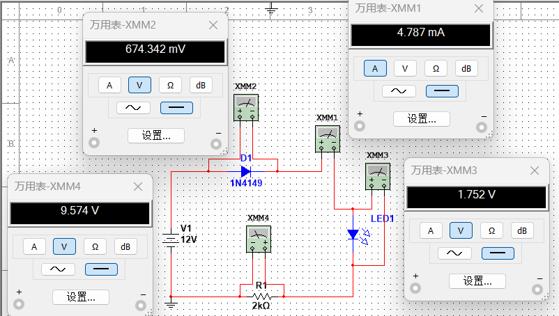
当二极管两端电压过小时，它是不导通的；当电压值达到
0.5v之后，开始导通二极管反向不导通，当电压达到 击穿电压 时，二极管导通

1.2 稳压二极管
能够稳定电压的二极管【如：ZENER-ZPD5.1 | 稳压5.1v】
实行稳压的条件：
- 工作在反向击穿状态【反接】
- 反向电压应大于稳压电压

1.2.1 测试

从伏安特性曲线可知，稳压二极管的电流应满足 I
zmin< I < Izmax，且大概为4mA~8mA

已知发光二极管导通电压为
1.66v，设导通电流为10mA，稳压二极管路端电压为5.1v，可以得到的：R2的阻值应为 R2 = ( UZPD5.1- ULED1) / ILED1= 344Ω为使得稳压二极管正常工作，取稳压二极管电流为
6mA，则流过串联电阻R1的电流为 IR1= ILED1+ IZPD5.1= 16mA，电压值为：总电压 - UZPD5.1=6.9V，得到串联电阻阻值为431.25Ω ≈ 431Ω
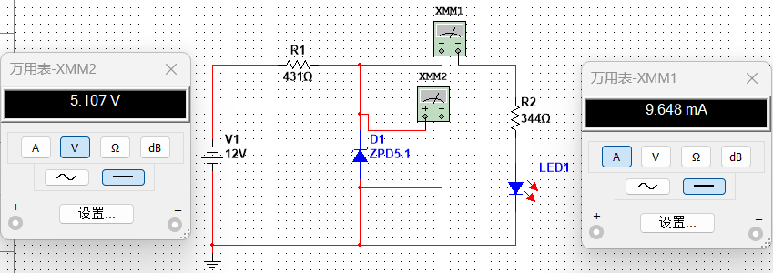
总结
- 稳压二极管的使用形式为稳压二极管和电阻进行串联
- 稳压二极管要达到比较好的稳压效果，一定要注意稳压电流的选取
- 在电路应用中一定要注意串联电阻阻值的选择
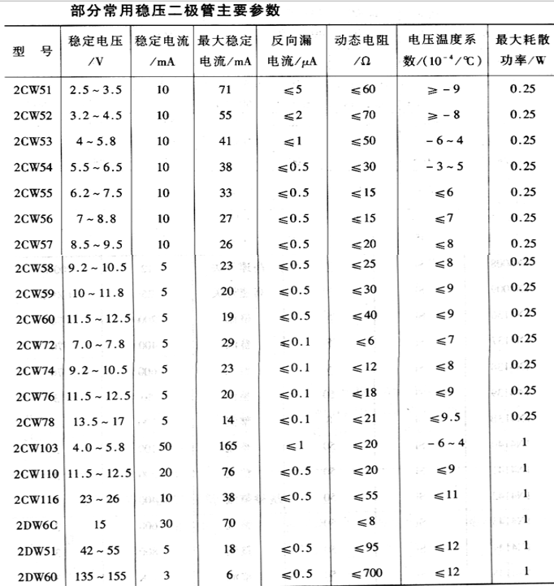
1.2.2 两种稳压电路
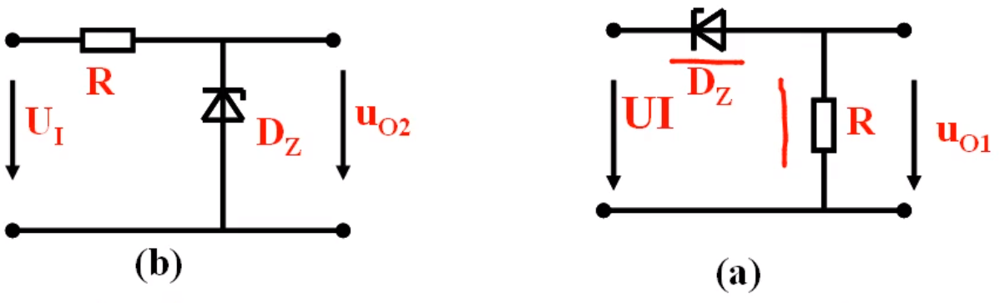
对于第一种电路：

- 当电压小于
3v时，未达到击穿电压，其反接在电路中相当于断开，故示波器输出的是R4上的电压 - 当电压
≥3v时，达到击穿电压，故示波器输出是等于稳压二极管上的电压
对于第二种电路：
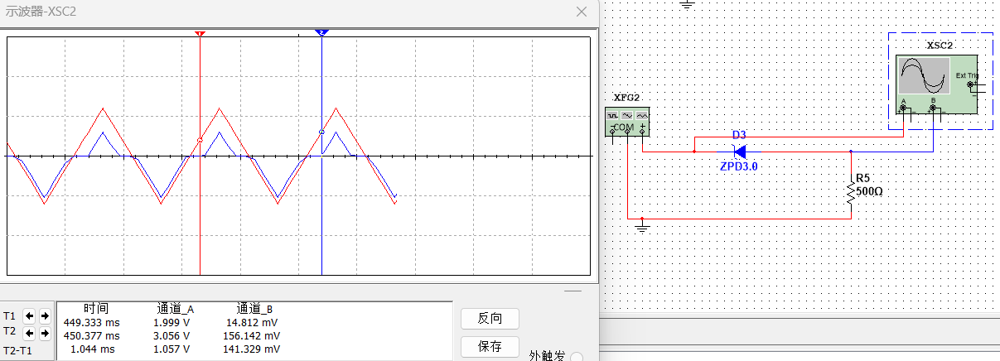
- 当电压小于
3V时，未达到击穿电压，其反接在电路中相当于断开，故示波器输出为0； - 当电压
≥3V时，达到击穿电压，稳压二极管分压3V，其余电压负载在R5，示波器输出R5的电压
1.3 整流二极管
用于把交流电变为脉动直流电
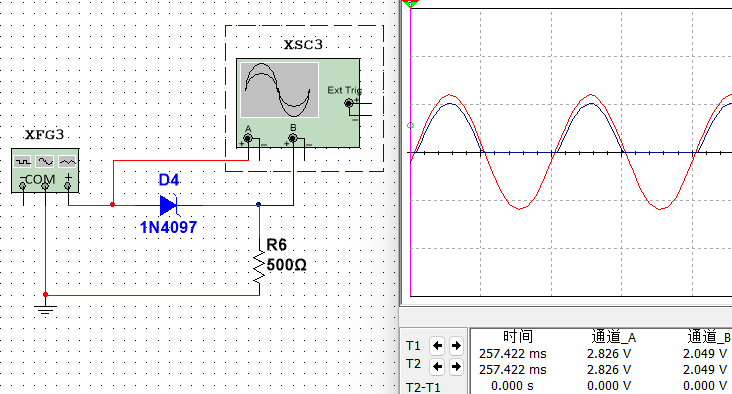
1.4 开关二极管
它是电路上为进行【开 | 关】作用而设计的二极管。它由【导通变为截止 | 截止变为导通】所需的时间比一般二极管短
应用：在电路中主要防止反向电流烧坏一些精密器件，起保护作用。

1.5 电容
它有两个电极板，和中间所夹的介质封装而成，具有特定功能的电子器件。
作用：旁路、去耦、滤波、储能
1.5.1 旁路

VCC电源可能会因为外界干扰，如变为蓝色信号，这样的信号对于处理器来说可能会导致错误的逻辑输出。若电压本身就是波动的，电容可以储能，当外界信号变化过快时，及时稳定信号
故加入电容：
- 使输入电压均匀化，减小噪声对后级的影响；
- 进行储能，当外界信号变化过快时，及时进行电压的补偿
1.5.2 去耦电容（退耦）
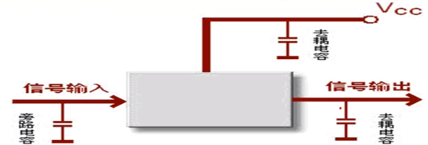
- 去耦电容和旁路电容的作用差不多，都有滤除干扰信号的作用，只是旁路电容针对的是输入信号，而去耦电容针对的是输出信号；
- 去耦电容一般比较大【
10uF或更大】，旁路电容一般根据谐振频率是0.1uF 或 0.01uF
1.5.3 滤波和储能
滤波作用：滤波杂波，大电容【如旁路电容中的4.7uF】滤低频，小电容【0.1uF 或 0.01uF】滤高频
储能作用：收集电荷
应用：如时钟芯片DS1302供电【在芯片和地直接接储能电容，当无VCC时，可供芯片短暂工作】
1.5.4 电容在电路中的连接
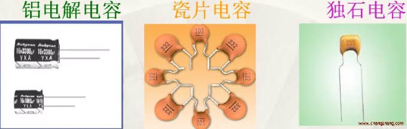
常用电容极性判断：
- 铝电容：长脚为正极，短脚为负极，或者电容上标有银色负号的一边为负极
- 瓷片电容和独石电容无极性，但设备生产中有工艺要求
注意：耐压值、防止短接【会爆炸】
1.5.5 电容应用总结
- 电源上的电容作用一般时滤除电源电压的波动；还可提供一定的电压储备，已备后续电路的需要；
- 对于一些强干扰的环境，电容的加入可以减少很多电路控制上不必要的麻烦，在使用电容时，需注意耐压值和反接问题
- 电容使用的取值问题可以参考已有电路，多为工程经验
2、晶体三极管
2.1 三极管介绍
由半导体组成的具有三个电极的晶体管

它是一种利用输入电流控制输出电流的电流控制型器件。【使用基极电流控制发射极电流】
三种工作状态：放大状态、饱和状态、截止状态
2.1.1 放大状态
对于NPN型三极管，基极电流
Ib = βIc，其中β为放大量【对于某个特定三极管，β固定】基极信号和集电极信号同时汇集给发射极，
Ie = Ib + Ic
条件：发射结正偏【Ub > Ue】，集电结反偏【Ub < Uc】
2.1.2 截止状态
条件：发射结反偏【Ub < Ue】，或两端电压为0【Ub = Ue】
2.1.3 饱和状态
饱和状态即，基极电流和集电极电流都很大时，发射极电流已经不受基极控制了
条件：发射结正偏【Ub < Ue】，集电结**正偏**【Ub > Uc】
2.2 三极管三种工作状态测试
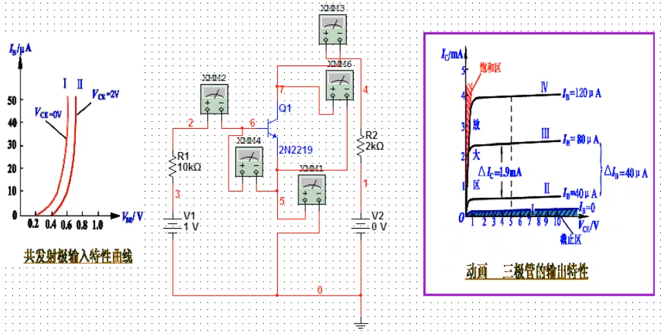
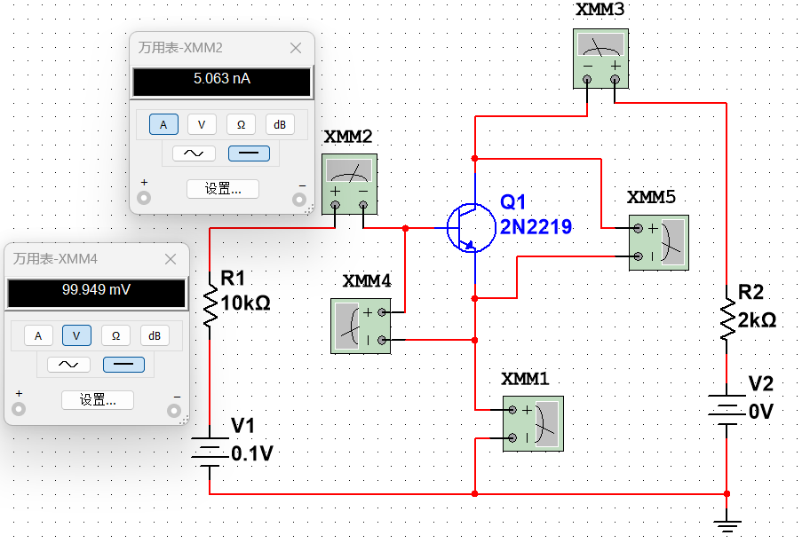
其中，
XMM1-2-3分别测发射极Ie、基极Ib、集电极Ic的电流，XMM4测基极与发射极之间的电压Ube，XMM5测发射极与集电极之间的电压Uce对于共发射极输入特性曲线，当
Uce = 0V时，即V2电压为0V，当Ube < 0.2V时，基极电流Ib = 0A，三极管处于截止状态【如上图，基极电流极小，Ube ≈ 电源电压】
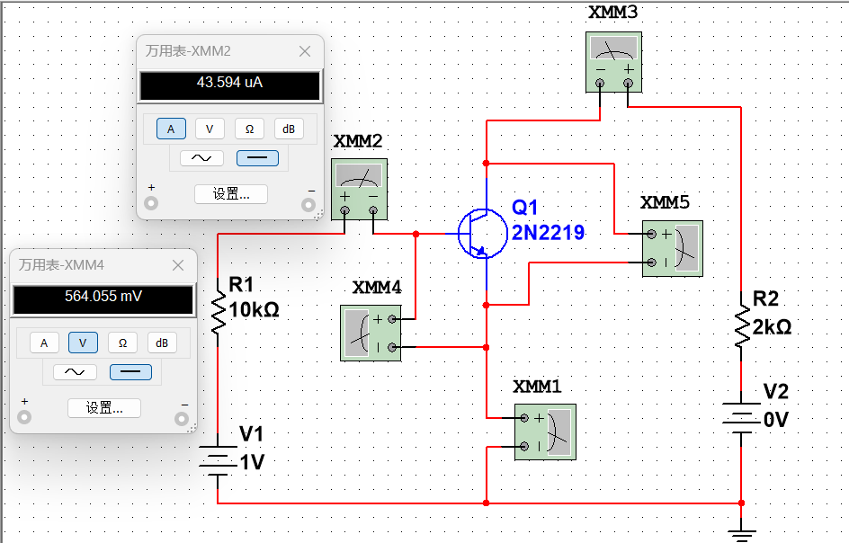
由共发射极输入特性曲线，当
Ube > 0.7V时，Ib导通【修改V1为1V】
结论一：当基极和发射极完全导通时，所分得的电压值为0.7V【工程规定】
放大状态测试：修改
V2 = 7v此时，万用表参数如下图所示。此时，
Ube = 663mV【发射结正偏】，Uce = 714mV，因为发射极接地，故有Ub < Uc【集电结反偏】。三极管处于放大状态。由图可知，
Ib = 33uA，Ic = 3.143mA，Ie = 3.176mA，可证实Ie = Ib + Ic，且Ib = βIc，β ≈ 95

测试Ⅰ：逐渐增大
V2【如8V、9V】，发现集电极电流Ic的增长很小测试Ⅱ：通过减小
R1来增大基极电流Ib，很明显集电极电流Ic的增长很明显
由上述测试和三极管输出特性曲线可得
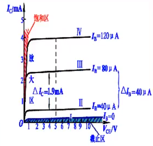
结论二：当基极电流Ib固定，改变Uce【即改变V2电压】，集电极电流Ic基本保持不变
结论三：当Uce固定【即V2电压固定】，增大基极电流Ib，集电极电流Ic也相应增大。但增大受到一些限制，如Vce【即V2】、R2，这些因素均是会影响集电极电流Ic的因素。在测试中，减小R2阻值，也会释集电极电流Ic增大的潜力。
在饱和区，
基极电流Ib和集电极电流Ic都很大，要求发射结和集电结均正偏改变参数：为增大
基极电流Ib，修改R1=100Ω，V1=1v
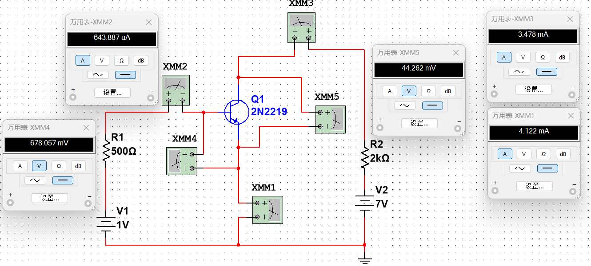
此时，发射结和集电结均正偏，此时
集电极电流Ic≠β*基极电流Ib
结论四：饱和区，集电极电流Ic不受基极电流Ib控制且都很大，并且Uce所占电压很小【这种接地法，Ub一直为0.7v】
2.3 小结
2.3.1 截止状态
特点：Ib = 0，Ic = 0， Ie = Ib + Ic = 0
工作状态：集电极和发射极之间相当于开路
2.3.2 放大状态

其中，
Ube为0.7V
2.3.3 饱和状态
特点：Ib和Ic 都很大，Ic 不受Ib控制，Uce两端电压很小，相当于导线，工程上认为硅饱和导通的Uce的压降为0.3V，锗管为0.1V。
2.4 三极管主要参数
- 共发射极电流放大系数：三极管的放大系数一般为
10-100倍，应用中一般取30-80为宜 - 集电极最大允许电流
Icm：超过最大允许电流可能会烧毁 - 集电极最大允许耗散功率
Pcm - 集电极-发射极间反向击穿电压
V（BR）CEO：即Uc或Ue大于Ub时，压差不用大于击穿电压
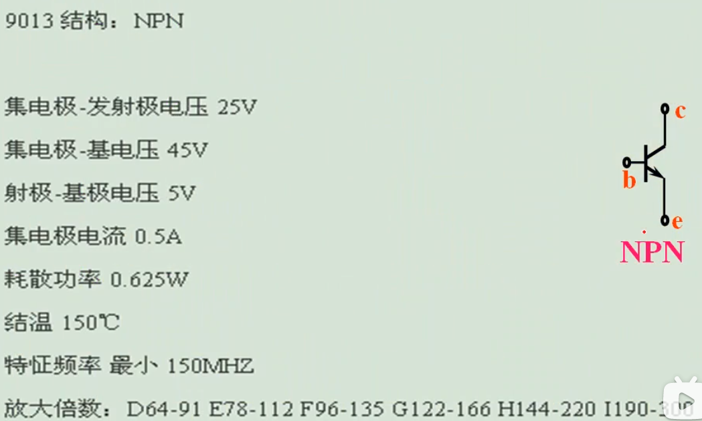
特征频率：只能方法150MHZ以内的信号
3、场效应管
3.1 场效应管介绍
它时一种电压控电流的器件。它有三个电极：栅极G、漏极D、源极S。

3.2 场效应管三种工作状态测试

如上图，
X4与X5其实是测试V1与V2的电压，X1、X2、X3分别测试栅极、漏极、源极电流
- 当
Uds = 10V【漏极与源极间的电压，即V2】时，当Ugs < 1.5V【栅极与源极间的电压，即V1】时，漏极电流极小，可视为不导通。【通常将1.5V称为门限点电压，Uth】 - 当
Uds很小且不变，Ugs增加会导致Id【漏极电流】增大 - 当
Ugs不变，Uds增大，漏极电流Id变化很小
3.2.1 截止区
当Ugs电压小于1.5V的开启电压时，mos管不导通。
3.2.2 可变电阻区
当Uds很小且不变，Ugs增加会导致Id【漏极电流】增大
3.2.3 恒流区
当Ugs不变，Uds增大，漏极电流Id变化很小
过损耗区：当电流和电压都很大，但未击穿时，该器件的功率较大，需要添加散热器避免损坏
3.2.4 击穿区
当Uds很大时【大于击穿电压】，场效应管被击穿。这种情况下，如没有限流电阻，管子很容易烧毁
3.3 三极管和场效应管的比较
三极管：电流控制器件【基极电流控制晶体管导电能力】
场效应管：电压控制器件【用电压产生的电场来控制器件导电能力】
| 三极管 | 场效应管 | |
|---|---|---|
| 输入阻抗 | 不高 | 极高 |
| 噪声 | 高 | 小 |
| 反应速度 | 较快【兆赫兹级】 | 慢 |
输入阻抗高时，仅需要极小的中间电流，就可接收前置电路的信号
3.4 结构分类
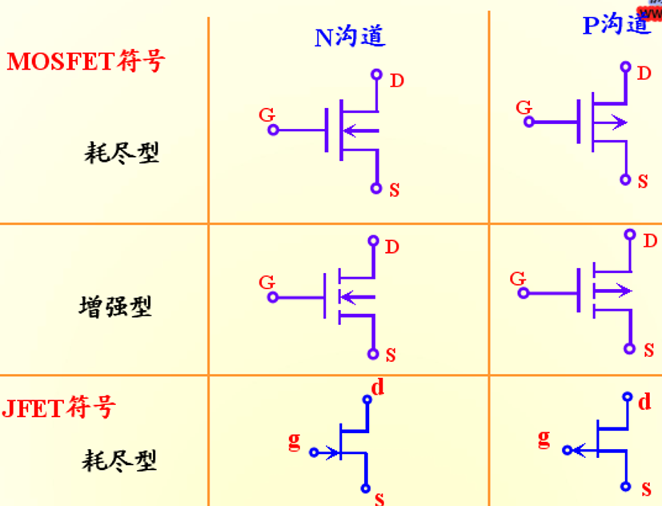
其中，N沟道
MOS的增强型，相当于NPN型三极管；P沟道MOS的增强型，相当于PNP型三极管耗尽型：当
Ugs = 0V时，但Uds ≠ 0V，也能产生漏极电流增强型：当
Ugs < 1.5V，无论Uds，MOS管不导通
4、光耦
实现一种“电-光-电”的转换。
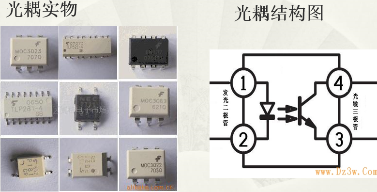
4.1 光耦测试
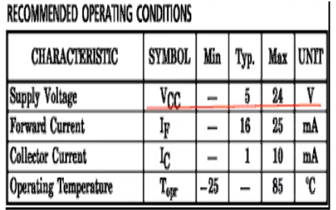
光耦器件基极电流为
16-25mA，此处取16mA发光二极管点亮，需要
5-20mA，光耦器件集电极最大电流10mA，此处取6mA

其中，由上图可知，光耦器件的前置电路占电压
1.214V，为使X1测得前置电路电流为16mA，则R1负载电压为U1 = 5V - 1.214V = 3.786V，故R1 = 3.786V / 0.016A = 236.625Ω对于后置电路，一般认为光耦器件处于饱和状态，所分电压一般为
0.3V；发光二极管所分电压为1.66V；电流取6mA。综上可得，R2所分电压为U2 = 5V - 1.66V - 0.3V = 3.04V，R2 = U2 / 0.006A = 506.66Ω修正
R1/R2后

4.2 光耦使用注意事项
光耦电路两侧的供电电源【VCC与VDD】最好不同
若两侧信号相同且具有干扰新信号，光耦电路会失去隔离两侧电路的作用
5、发声器件
作为电子讯响器，运用其发声特性，作为提示或播放功能。

- 左图为喇叭，无极性器件【无正负之分】，无源蜂鸣器【内部没有振荡源，故直流不能驱动，需要
2KHZ-5KHZ的方波才能工作】 - 右图为蜂鸣器，有极性【长脚为正，短脚为负】，有源蜂鸣器【内含振荡源，给予
1.5V-15V的电压后就会工作】
6、继电器
6.1 继电器介绍
它是一种“自动开关”，通过【低电压、小电流】去控制【高电压、大电流】。

如上图，如果用
3、5脚接入220V电路，接入5V电源，铁芯磁化导致3、5脚接通；若1、2脚无电源，衔铁被弹簧弹起，高电压电路被断开
常用术语
- 常开触点：如
3、5脚 - 常闭触点：如
3、4脚
应用：对开关速度要求不高的场合
6.2 继电器实物分析
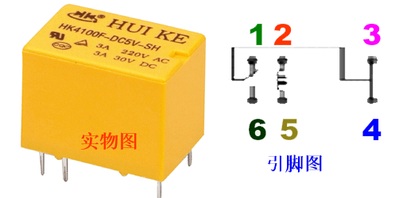
- 如上图所示,驱动电压为
5V - 可以承受的控制信号量值：直流
30V-3A、交流220V-3A
使用时，既要达到驱动电压，又要防止器件烧毁
6.3 继电器测试电路

左侧“K”部分表示线圈部分，右侧表示开关部分
EMR121A05继电器，“05”表示驱动电压为5V
7、数码管
通过控制不同的LED点亮来显示所需要的字符。
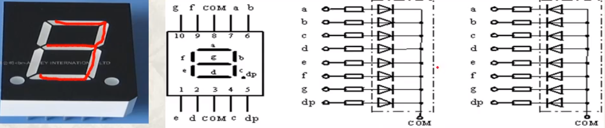
以上为实物图、示意图、共阴结构图、共阳结构图
7.1 数码管测试电路

8位组合开关：
DSWPK_8数码管：指示器【
HEX_DISPLAY | SEVEN_SEG_DECIMAL_COM_K】
K：阴极A：阳极COM：自动数码管也属于发光二极管，故导通电压为
1.66V，电流为5-20mA
8、瞬态电压抑制器【TVS】
它是一种二极管形式的高效能的保护器件，防止瞬态高能量冲击，保护精密器件免受各种浪涌脉冲的损坏。
8.1 TVS作用
- 在信号和电源线上，能防止微处理器，人体静电、交流浪涌或噪声，导致处理器的失灵
- 能释放超过10000V，60A以上的脉冲，并能持续10ms，而一般的TTL器件，遇到30ms的10V脉冲时，便会导致损坏，所以利用TVS是既可以防止器件损坏，也可以防止总线之间开关引起的干扰
- 将TVS放置在信号线和地之间，能避免数据及控制总线受到不必要噪声的影响
8.2 TVS典型电路

二、基本电路验证与分析
1、基本放大电路
1.1 基本共射级放大电路
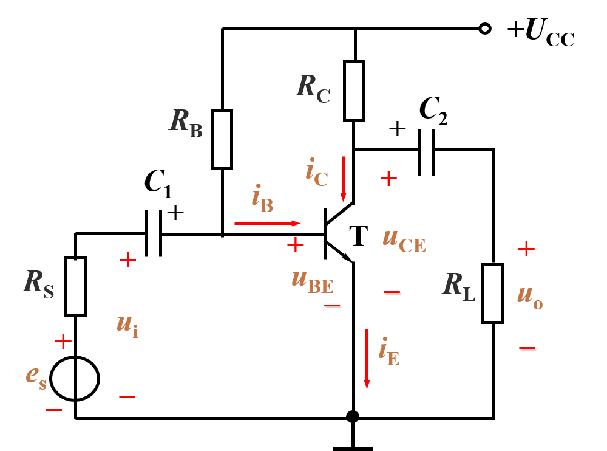

左侧
es信号发生器为输入信号，右侧U0为输出信号C1与C2为隔直通交作用
电容
C1的作用是：防止Ucc对输入信号的影响
Ucc的作用：
- 为电路供能
- 为电路提供合适的静态工作点【当输入信号反向时，
Ube < 0.7V三极管截止，导致输出波形失真】
Rb的作用：为电路提供合适的静态电流Ib
Rc的作用：把放大的电流信号转化为电压信号
各器件的取值范围
- 三极管的放大电路的小信号的放大，常用器件最大通过电路也只有几百毫安，所以输入信号不能太大 ；
- 对于三极管放大电路的设计，基极电阻
Rb一般为几十到几百千欧。集电极电阻Rc一般为几千到几十千欧； C2、C2作为隔直通交的电容，取值一般为几微法到几十微法。
1.2 动静态的分辨
此处的共射极电路分析参考【此处】

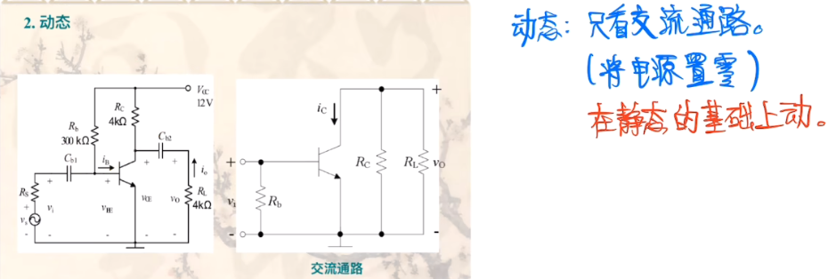
直流通路：去掉电容支路及交流信号源支路
电容对于直流电路来说相当于断开
1.3 小信号模型【交流】
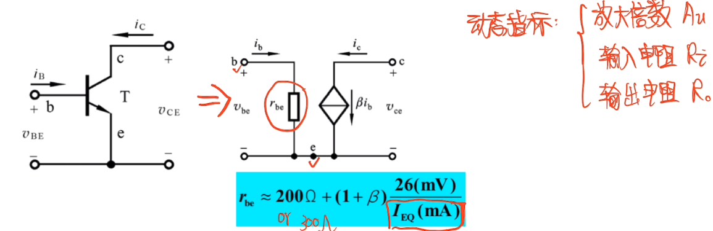
例题：
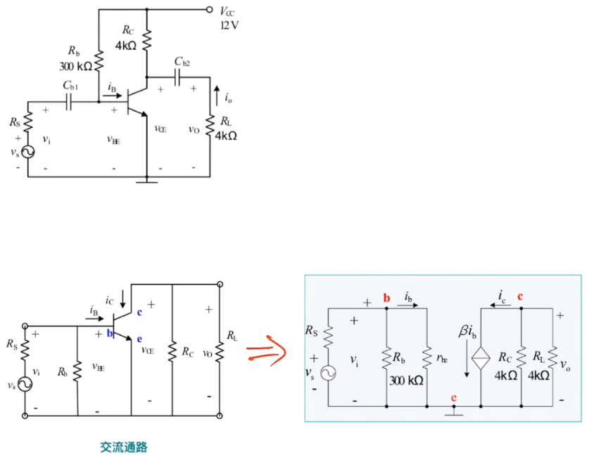
1.4 电路分析及测试
1.4.1 静态电路分析
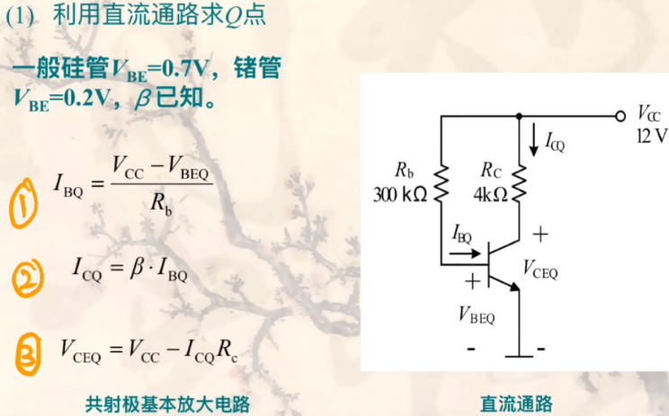
1.4.2 动态电路分析
小信号模型为

① 电压增益为
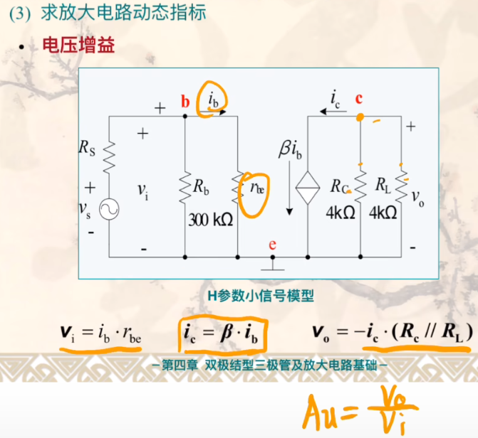
源电压增益为
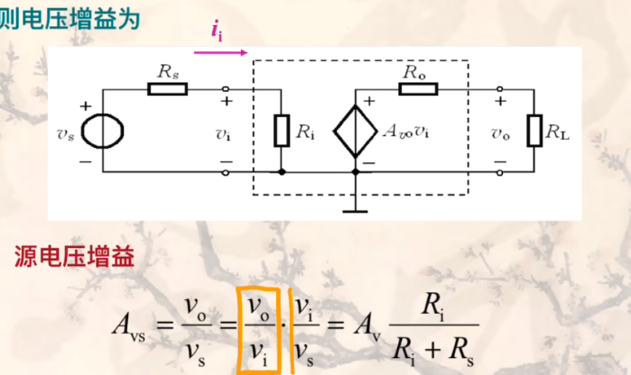
② 输入电阻Ri 为

③ 输出电阻R0为

例题


1.4.3 电路测试
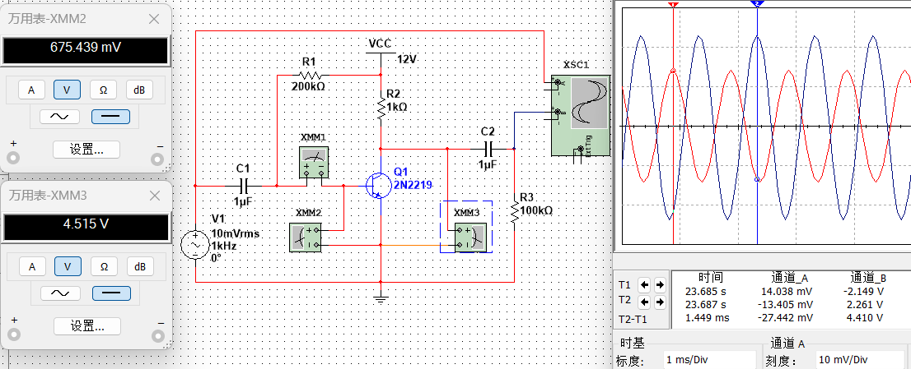
由X2、X3可知，三极管发射结正偏，集电结反偏，三极管于放大状态
对于有效电压为
10mV的交流信号，最大电压为10√2mV，约为14.14mV，放大后最大为2.261V，放大倍数为161倍，且输出信号被反向
① Uce为什么会被反相？
Ub【总基极电压】为交流信号与直流信号Uc的叠加值

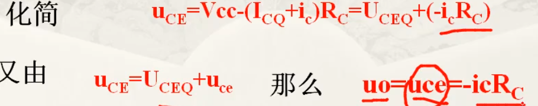
u[BE]表示总基极电压，即B点电压，E表示发射极电压，因发射极接地故数值相等
U[BEQ]表示直流电在B点给定的电压，Q来自于【静态电路 |Quiescent state】
u[i]表示直流电在B点给定的电压——————————————
i[B]表示总基极电流
I[BQ]表示直流电给定的电流
i[b]表示交流电给定的电流——————————————
i[C]表示总集电极电流
I[CQ]表示直流静态电路给定的电流
i[c]表示交流电给定的电流——————————————
u[CE]表示总的集电极与发射极电压差
② 减小Rb的后果【如R1=100kΩ】：输出信号的部分负向信号被削减【饱和失真】
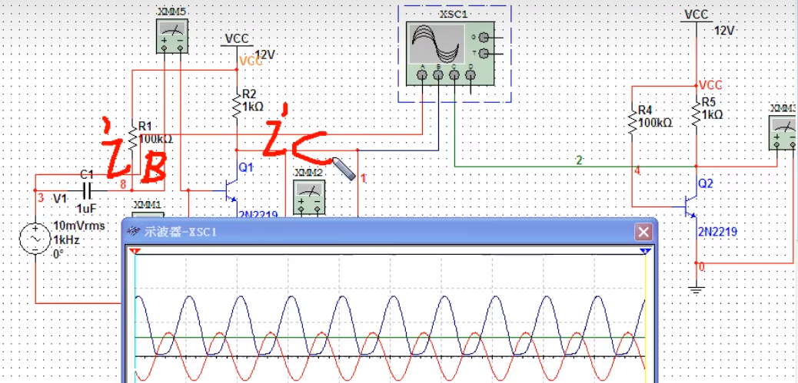
这是因为，R1减小，基极电流
Ib增大，导致集电极的电流Ic也增大又因为输出电压
Uce = -ic*Rc，故输出信号峰值也增大，但反向电压也反向增大至小于0，使三极管饱和失真。
③ 增大Rb的后果【如R1=1MΩ】：输出信号的部分正向信号被削减【截止失真】
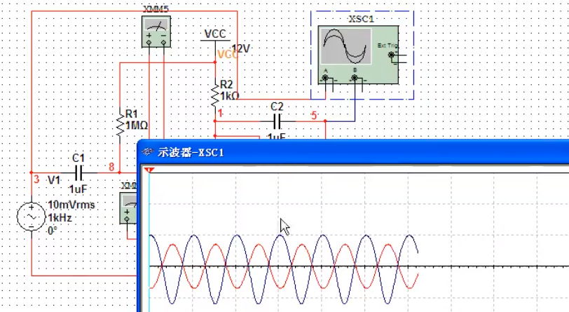

④ 如何确定合适的静态工作点Q：即分析与Rb、VCC、Rc的关系，参考此处
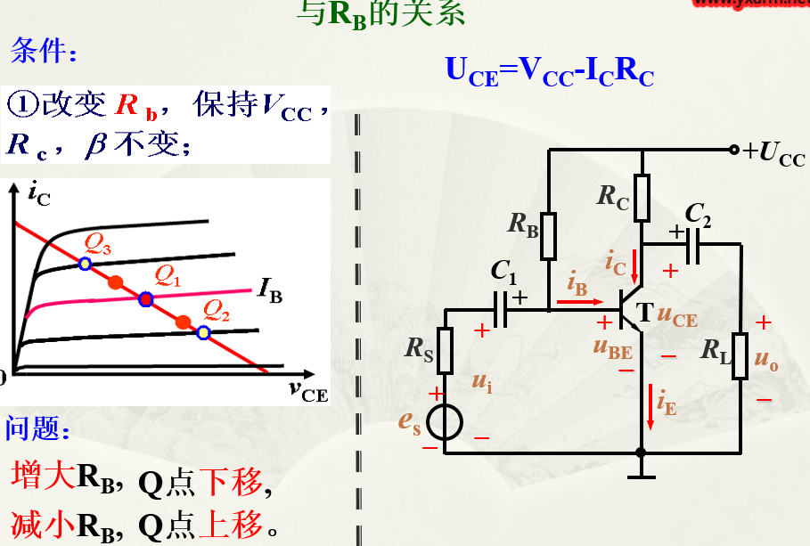
Rb增大，基极电流Ib减小，导致Ic减小，由公式得Uce增大

VCC增大，基极电流Ib增大，导致Ic增大
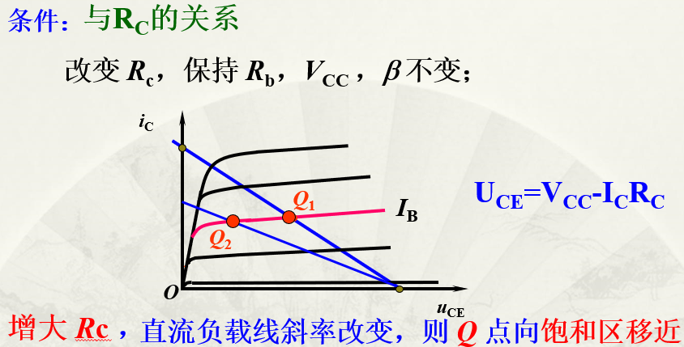
1.5 温度影响
这种电路虽然结构简单，但最大的缺点是静态工作点不稳点。当环境温度变化、电源电压波动、更换三极管时，都会使原来的静态工作点改变，严重时使放大器不能工作。
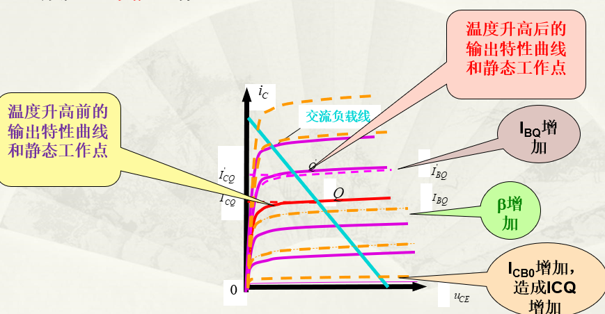
1.6、分压偏置式共射极三极管放大电路

B点处的电压
Vb可由R1和R2分压计算三极管BE段与
R3串联，再与R2并联，故电压相同值为Vb，即Vb = Vbe + U3：而Vbe = 0.7V，故计算出R3的电压U3进而计算出三极管发射极电流
Ie = U3 / R3，可以看到发射极电流与三极管失去的关系，除去了温度对电路的影响。
温度变化分析
温度升高↑，放大系数β增大↑，静态电路的集电极电流Icq增大↑，发射极电流Ieq也增大↑，进而U3也增大↑。同时，B点处的电压Vb不变，U3↑，故三极管基极与发射极间的电压Vbe减小↓，【此处逻辑有问题，之后补充】这样导致Ibq减小↓，Icq减小↓，U3减小↓【R3为电流负反馈】
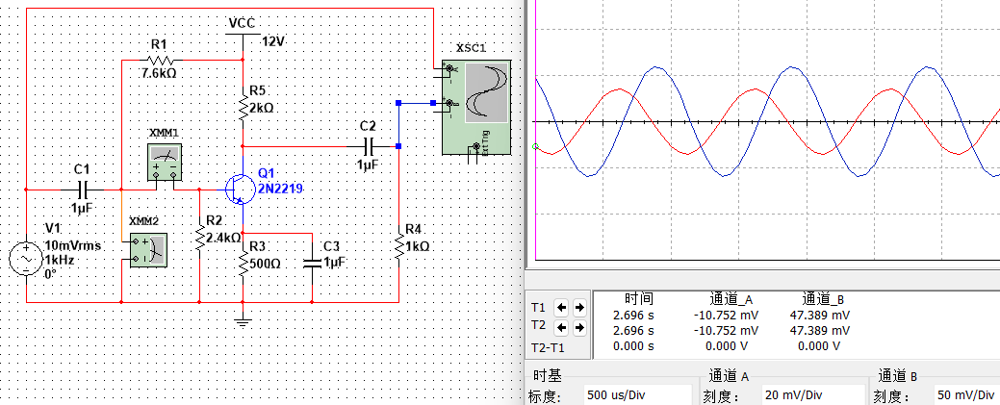
改变R3电阻值后【R3 = 400Ω↓】，放大倍数减小
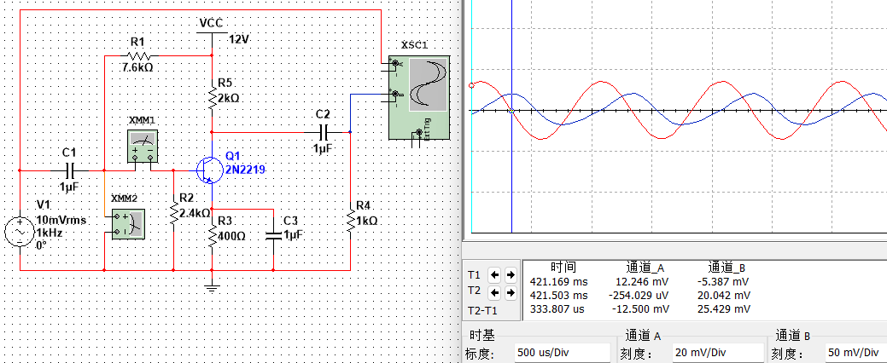
断开C1，输出信号电压减小
总结

1.7 反馈
凡是将放大电路输出端的信号（电压或电流）的一部分或全部引回到输入端，与输入信号叠加，就称为反馈。
负反馈：引回的信号削弱了输入信号。
正反馈：引回的信号增强了输入信号。


其中，基本放大电路放大倍数
A【A≥1】，反馈网络放大倍数F【0≤F≤1】对于闭环放大倍数
Af，在深度负反馈条件下，即1+AF ⋙ 1，即AF ⋙ 0，故1+AF ≈ AF
此时，闭环放大倍数取决于反馈系数F，而与开环放大倍数A没有关系。通常，反馈网络仅由电阻构成，反馈系数F十分稳定。所以，闭环放大倍数必然相当稳定，诸如温度变化、参数改变、电源电压波动等明显影响开环放大倍数的因素，都不会对闭环放大倍数产生多大影响。
1.7.1 负反馈
负反馈的作用：
- 稳定静态工作点
- 稳点放大倍数
- 改善输入电阻和输出电阻，扩展通频带，改善输出信号波形
负反馈作用举例
例一：
如某放大器的开环放大倍数A=1000，由于外界因素影响，其波动幅值为10%，若反馈系数F为0.009，则闭环放大倍数Af = 1000 / (1 + 1000 * 0.009) = 100。
此时波动10%，变化量仅为1，可见放大倍数的稳定性大大提高
【其实是以降低放大倍数为代价，提高放大倍数的稳点性】
例二：
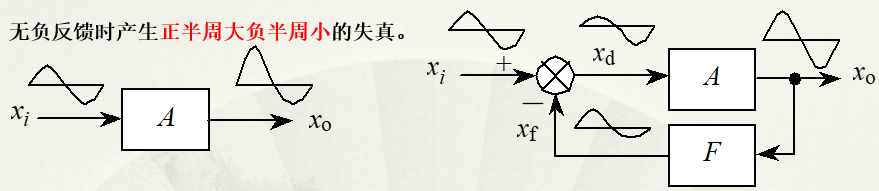
引入负反馈后，失真了的信号经过反馈网络又送回到输入端，与输入信号反向叠加，得到的净输入信号为正半周小而负半周大。这样正好弥补了放大器的缺陷，使输出信号比较接近正弦波。
1.7.2 正反馈

当|AF| = 1时，即放大系数A和反馈系数F呈倒数关系。此时，电路将产生自激，去除信号源也将产生信号的输出
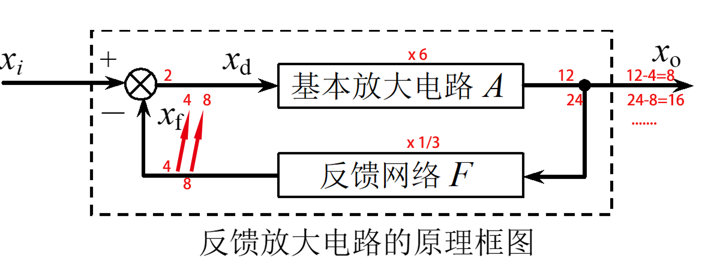
当|AF| ＞ 1时，放大系数A过大，输出信号将不断增加，如果无及时的限制措施，信号将出现严重失真【如上图】
当|AF| ＜ 1时，反馈系数F过大，信号将不断衰减，直到消失
2、电源电路
2.1 集成稳压电源电路
2.1.1 5V稳压电路

此为5V稳压电路。
其中，
1G4B42为整流桥【将交流变为脉动直流】C1电容将脉动直流基本转为直流，C2电容滤除高频信号，C2、C3为去耦电路，小电容滤除高频干扰，大电容滤除低频干扰，且电容可储能，当外界电压不稳定时对
LM7805进行供电
1N4148是当右侧有反向电流时，二极管立即被导通并将负电压导入到地，起到防止7805稳压器被反向烧坏的作用。
LM7805为5V稳压芯片，输入电压在7-35V之间变压器
TS_MISC_25_TO_1为25：1的电压器
小结：
- 整流二极管的选择：
Uzmax = √2Uo【Uo为变压器副线圈输出的有效值】，即应选择反向电压大于Uzmax的整流管。 - 电容C1的选择【经过电容输出的电压为
1.2Uo】，即耐压值大于1.1√2Uo，大约为1.55Uo - 变压器的选择：应选变压电压大于稳压块电压，电流大于需要输出电流的变压器
- C2作为旁路电容，滤除输入线上窜入的干扰信号，防止自激，选择电容一般为0.3uF。
- C3、C4作为耦合电容，滤除输出线上的干扰和自激，以及对输出线上电压的突变，提供储能的作用
LM7805的引脚及功能- Input：电压输入端，其输瑞入电压范围为
7~35V - Ground：电源地端
- Output：电压输出端，典型值为
5V - 最大电流：
1.5A
- Input：电压输入端，其输瑞入电压范围为
LM7912的引脚及功能- Input：电压输入端，其输瑞入电压范围为
14.5~35V - Ground：电源地端
- Output：电压输出端，典型值为
-12V - 最大电流：
1.5A
- Input：电压输入端，其输瑞入电压范围为
LM317的引脚及功能- Input：电压输入端，其输瑞入最大电压为
40V - Output：电压输出端，可输出
1.25~37V可调的电压 - Adjust：调节端
- 最大电流：
1.5A
- Input：电压输入端，其输瑞入最大电压为
2.1.2 设计一个输出±3~ ±12正负可调电源
略，过于复杂，如需要深究，需要着重研究
小结：
- 在电路应用中要注意器件的选择问题
- 电路中的地，不是0V，是公共端，电压的输出的压差决定的，所以要注意共地问题。
2.2 扩流电路
稳压电路一般电压固定，如需要提高输出电压，则需要扩压电路

测试略，参考

2.3 开关电源电路
由于稳压调整管工作在线性区，因此管耗很大，电源效率为原来的（40％~60％）。而开关管让稳压调整管工作在开关状态，所以电源效率高（ 80％~90％），稳压宽，滤波效果好，在电子设备产品中被广泛应用。
原理分析略
3、集成运算放大电路
集成运算放大器是一种具有很高放大倍数的多级直接耦合放大电路，是发展最早、应用最广泛的一种模拟集成电路。
特点：高增益、高可靠性、低成本、小尺寸
表现： 【放大倍数A、输入阻抗高r(对前级电路影响小)、输出电阻小(对后级电路影响小)、共模抑制比（抗干扰能力）】
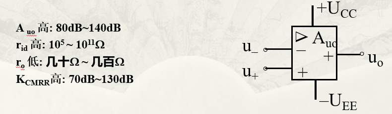
运算放大器特点：
★ 工作在线性区
- 理想运放两输入端点位相等【虚短】【
Uo = Aud * Ui,Ui = Up - Un，故Ui = Uo / Aud，因为Aud很大，故Ui ≈ 0，即Up = Un】【Up为正极电压】 - 理想运放输入电流等于0【虚断】【理想的输入阻抗高，故正向端与反向端电流为0】
★ 工作在非线性区【依然虚断】
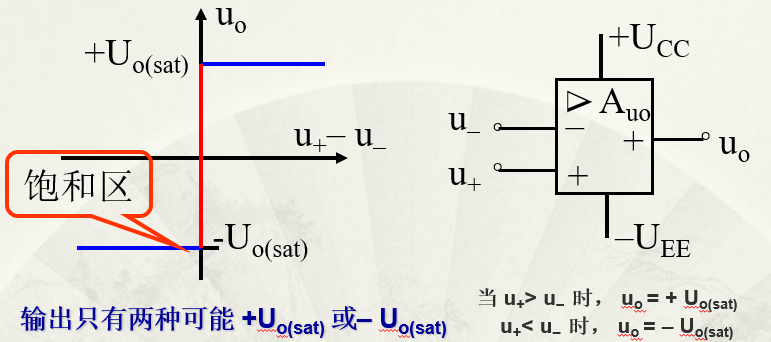
3.1 反相比例运算放大电路

电路测试

此时，
Auf = -Rf / R1 = -2，R3一般取值≈ R1∥R2，可提高电路抗干扰能力
VCC为正电压，VSS为公共节点端，即负电压
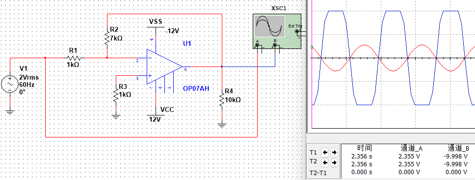
结论
- 反向比例运算放大器的电压输出与原方向相反【输出为正时，输出为负】
- 当
R1 = Rf时，电压放大倍数为-1，如果电路要检测负压，可以通过此电路完成 - 当放大倍数过大，超过供电电压时，会造成失真
3.2 同相比例运算放大电路
与反相比例运算放大电路的区别：同向电路的输出信号是从
U+端输入的

R3一般取值≈ R1∥R2，可提高电路抗干扰能力


此电路称为跟随器，输入与输出一致
另外，当放大倍数过大，超过供电电压时，会造成失真【同反向比例运算放大电路】
3.3 反相加法运算电路
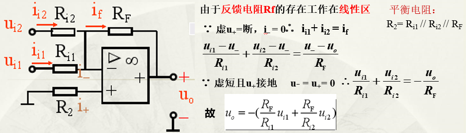
电路测试：
V1、V2、V3输出的放大倍数均为两倍，即三者均为并联，最后叠加后为三者放大后之和的反向
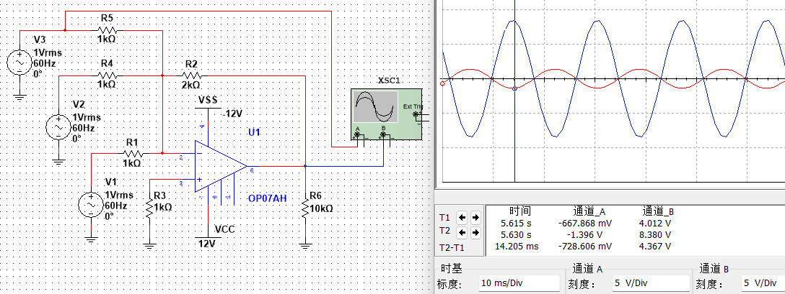
3.4 同相减法运算电路

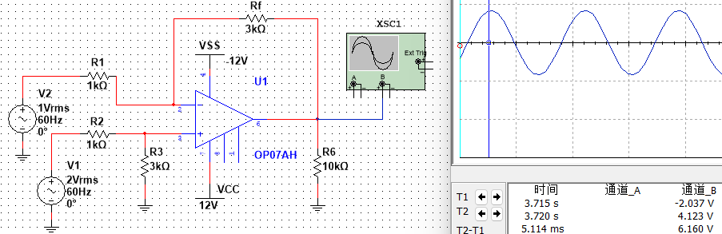
此时，输入第Ⅰ种情况，
Uo = 3（u+ - u-）
3.5 单双极变换电路
5V~-5V的对称信号，称为双极性信号；反之，如0V~5V的不对称信号称为单极性信号
3.5.1 双极性电压变单极性电路
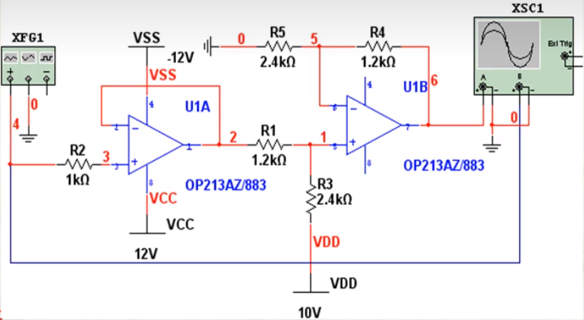
- 该电路左侧为一个运算放大器的电压跟随器电路【运算放大器输入电阻很大，故其对前一级和后一级电路的影响会很小】
- 右侧电路为一个同相比例运算放大电路
对于右侧的运算放大器，正极输入电压
u+由两部分构成：前级信号输入ui、VDD当只考虑
ui时，R1与R3相当于串联分压，可计算出u+部分当只考虑
VDD时，R1与R3也相当于串联分压，可计算出u+部分
注意：上图公式中同级比例放大的公式中的
R1，实际为R5此时，
VDD = 10V，Ui = -5V~5V，故Uo = 0~10V

电路测试

3.5.2 单极性电压变双极性电路
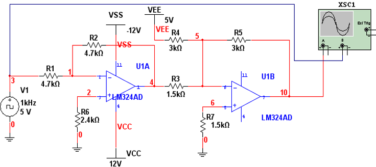
- 左侧电路为一个反向比例放大器
- 右侧电路为一个反相比例加法电路
左侧的放大器：
放大倍数 = -R2 / R1 = -1，对于0~5V的信号输入，输出为-5V~0V当左侧电路输出
0V信号，另一个5V输入的放大倍数为-1，加法电路输出为0V + (-5V) = -5V当左侧电路输出
-5V时，该输入端放大倍数为-R5 / R3 = -2 倍，加法电路输出为(-5V)*(-2) + (-5V) = 5V

3.6 仪表放大器
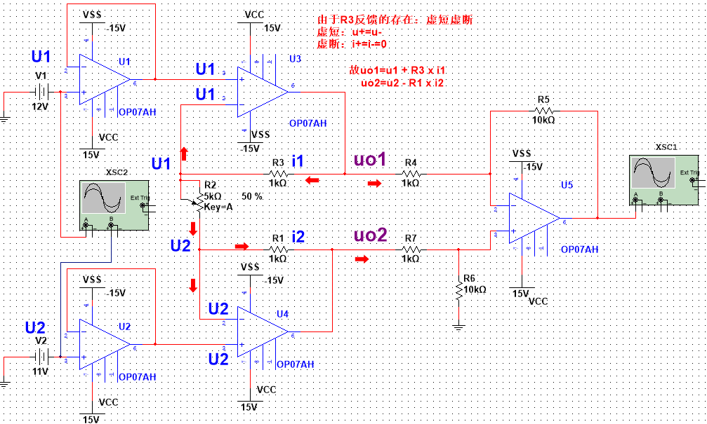
该电路为上下对称，第一个为跟随器，第二个为同相比例放大电路，最后为同相减法器
对于同相减法器，由于R4=R7且R5=R6，则有
由虚短虚短可得uo1和uo2，故有Uo = -(R5/R4)*(1+2R3/R2)*(U1-U2)，且仅有U1、U2、R2为变量，可通过调节R2，改变放大倍数
对于该电路的对称性，可使得电路的抗干扰能力增强【如
U1-U2的值不变，输出就不变】
该电路的测试有些小问题，待补充
3.7 积分微分电路
3.7.1 积分运算电路
相似于反向运放电路，不同点是将反馈电阻变为反馈电容，但同样满足虚短虚断
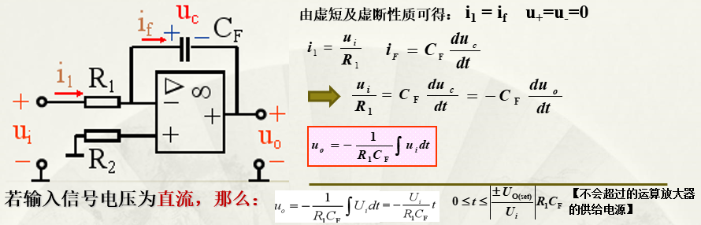
该电路可输出三角波
3.7.2 三角波发生电路
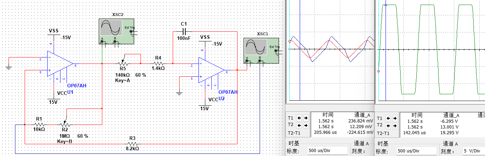
R5增大，输出波形频率降低R2增大，输出波形幅值减小
工作原理：
- 后端电路为典型的积分运算电路，可输出三角波
- 当
R5增大，由积分运算电路Uo的积分公式可得，即相当于公式中的R1增大，Uo输出减小，要达到同样的Uo，则所需时间【周期t】增大 - 前端电路中，
R1和R2连接至正输入端，为正反馈，运算放大器工作在非线性区。此时，当u+ > u-时，输出正VCC；当u+ < u-时，输出负VSS - 由于前端电路的运算放大器引入的是正反馈，只要有失调电压【即当输入为
0V，输出却不为0V】，无论正负，该运算放大器都将工作在非线性区，并输出电源电压 - 假设失调电压为
0.5V，其通过反馈电路到达u+，此时u+ > u-，输出正电压【如+15V】。该电压通过R4和R5给电容C1进行充电【Uo = -Uc】，并不断反馈给前端电路。随着不断充电，Uo会负的越来越大【绝对值越来越大】，u+减小，直至u+ < u-，输出负VSS【如-15V】。此时，该电压通过R4和R5给电容C1进行反相充电【Uo = -Uc，Uo输出为正】，再反馈给u+，使其逐渐增大，直至再次u+ > u-，输出正电压。
3.7.3 微分运算电路
相似于反向运放电路，不同点是将R1电阻变为电容，同样满足虚短虚断
输出为正负脉冲，当输入电压的变化率越快，输出值越大
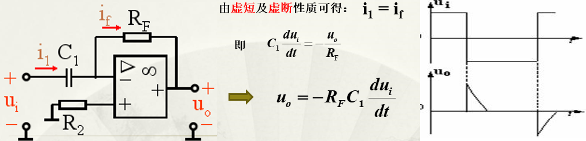
3.8 滤波电路
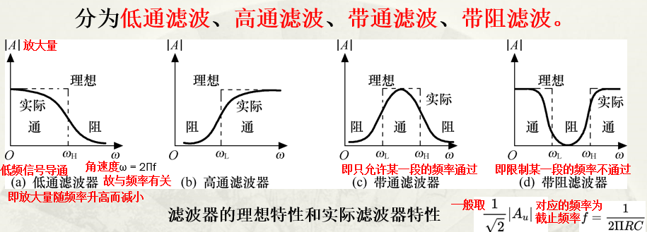
3.8.1 低通滤波电路
如下电路为10kHZ低通滤波电路，右侧为跟随器
低通频率计算：
- 由波特图示仪，频率越高，衰减量【dB】越大
R1与R2的存在，会使得衰减更快，此种被称为二级滤波- 对于一级滤波【波特图示仪的输出接
A点：只经过R1过滤】，衰减相比二级滤波会慢一些
3.8.2 高通滤波电路
如下电路为10kHZ高通滤波电路，右侧为跟随器
3.8.3 带通滤波电路
如下电路为10k~100kHZ带通滤波电路【级联高低通滤波电路】，右侧为跟随器
3.8.2 带阻滤波电路
如下电路为5k~20kHZ带阻滤波电路【并联高低通滤波电路】，右侧为跟随器
3.9 采样保持电路
该电路多用于模数电转换电路【A/D】之前。由于A/D转换需要一定的时间，所以进行A/D转换前必须对模拟量进行瞬间采样，并把采样值保存一段时间，以满足A/D转换电路的需要。
- 开关
S闭合，ui对电容uc充电- 开关
S断开后，电容放电电容的放电时间
t = 0.7*R*C【即R越大，放电时间越长，也就是说在一定时间内，R越大，放电量越小】由于运算放大器的输入阻抗高，故
电容uc的衰减量很小【uc = uo】。
- 当输入的正弦波处于正半轴时，二极管
D1不导通 - 当输入的正弦波处于负半轴时，二极管
D1导通，并对电容C1进行反向充电 - 充电之后正弦波进入正半轴，二极管断开，电容放电进入电压跟随器
该电路
VSS可等于0V
3.10 文氏桥震荡电路
由示波器可知，一个周期约为
1ms，故频率约为1kHZ也可通过公式计算
该电路上半部分：文氏桥典型接法【一个电阻与电容并联并接地，再串联一个电阻和一个电容】
该电路下半部分：同相比例放大器
- 当
Uo输出较小时，二极管D1D2不导通，Rf = R3 + R5 = 670kΩ，同相比例放大倍数A = 1 + Rf / R4 = 7.7 > 3【达到AF > 1的起振条件】 - 当信号不断放大，下方二极管
D1先被导通，且与R5并联，使得Rf减小，放大倍数A也减小 - 为使得输出波形稳定，并联部分会自动寻找合适的输出阻值，使得放大倍数
A=3【即R5并联部分电阻为30kΩ】
小结：R5控制起振速度，R3控制幅值大小【不可大于200】
3.11 电压比较电路
理想运放工作在非线性区的特点：
当u+ > u-时， uo = +Uo (sat)
当u+ < u-时， uo = -Uo (sat)
条件：没有负反馈回路
【因为仿真或电路问题，该电路测试未成功】
LM339负输入端电平为0，当正输入端为-5V时，LM339输出-5V，三极管截止；当正输入端为
5V时，LM339输出5V【仿真时出现问题，待补充】，三极管导通，发光二极管发光；
4、功率放大器
功率放大电路是一种以输出较大功率为目的的放大电路。
特点：
- 输出信号电压大
- 输出信号电流大
- 放大电路的输出电阻与负载匹配
电压放大器与功率放大器的区别：
- 电压放大：不失真地提高输入信号的幅度，以驱动后级功率放大级，通常工作在小信号状态
- 功率放大：信号不失真或轻度失真的条件下提高输出功率，通常工作在大信号状态
4.1 功率放大电路中三极管的三种工作模式
为什么甲类工作效率低乙类工作效率高?
对于甲类工作电路
对于乙类工作电路，当输入信号处于正半轴，
T1导通T2截止；当输入信号处于负半轴，T1截止T2导通由乙类工作特性图，忽略饱和压降
Uces，其有效电压Vcc，功率P = Vcc*ic
4.2 功率放大器内部的两种结构电路
上为
OTL电路区别：
OCL电路无电容，但有双电源供电
- 当输入信号处于正半轴，
T1导通T2截止。此时正电源通过T1给电容充电- 当输入信号处于负半轴，
T1截止T2导通。此时由电容供电
上为
20~20kHZ OCL电路其中，信号输入放大器正相端【同相】，故放大倍数
A = 1 + Rf / R1 = 3倍【符合测试数据】
VCC处的大电容和小电容作用为去耦：小电容滤高频，大电容滤低频，且大电容还可以避免VCC供电不及时，由电容及时补充VSS处同理，但要注意电容正极方向，否则会导致电容爆炸- 左侧为高通滤波电路，防止直流影响
功率放大器应用：一般功率放大器都会集成于芯片【如LM386】
5、555震荡电路
5.1 555震荡电路
555定时器：一种应用方便的中规模集成电路，广泛应用于信号的产生、变换、控制与检测。因其是有3个5KΩ的电阻分压，故称为555定时器。
复位端：当为零电平时，
Q输出0，Q逆输出1，Q逆反相，uo输出为0复位端一般接
VCC，暂无复位功能
5.1.1 多谐振荡器
工作原理：
VCC通过R1、R2给电容C充电，刚开始时电容C的电压较小【小于1/3VCC】，即TH/TR < 1/3VCC【工作状态④：uo = 1，三极管截止】- 当电容
C的充电过程达到1/3VCC < v < 2/3VCC时，即1/3VCC < TH/TR < 2/3VCC【工作状态③：状态不变】 - 当电容
C的充电过程达到v > 2/3VCC时，即TH/TR > 2/3VCC【工作状态②：uo = 0，三极管导通，电容C通过7脚放电端进行放电】 - 当电容
C的放电过程达到1/3VCC < v < 2/3VCC时，即1/3VCC < TH/TR < 2/3VCC【工作状态③：状态不变】 - 当电容
C的放电过程达到v < 1/3VCC时，即TH/TR < 1/3VCC【工作状态④：uo = 1，三极管截止】
震荡周期：
占空比：
VCC通过R1及可调电阻上半部分，在经过二极管D1给电容C充电- 电容
C通过R2及二极管D2、可调电阻下半部分，经过7脚进行放电
5.1.2 设计产生1KHZ占空比可调电路
仿真时出现意外错误【未解决】
5.2 单稳态触发器
工作特性：
- 具有稳态和暂稳态两个不同的工作状态；
- 在外界触发脉冲的作用下，能从稳态翻转到暂稳态，在暂稳态维持一段时间后，电路自动返回稳态；
- 暂稳态不能长久保持，其维持时间取决于电路的自身参数，与触发脉冲无关。
单稳态电路原理：
如上图所示，
TR端接ui为高电平的输入波形，在555定时器内部，必然有TR = u+ > u- = 1/3VCC，故C2 = 1VCC通过R给电容C充电，刚开始时电容C的电压较小【小于1/3VCC】，即TH < 1/3VCC【工作状态③：状态不变，即保持状态 ；假设电路通电之前通过复位端进行了复位，则此时输出为uo = 0】【此时，Q逆为1，Q=0，三极管导通，一直处于边充电边放电状态】突然，
ui输入一个低电平下降沿，即TR < 1/3VCC，故C2 = 0；TH端同上，依然有TH < 1/3VCC，即C1 = 1。【工作状态④：uo=1，三极管截止】【此时，VCC给C充电】当电容
C的充电过程达到1/3VCC < v < 2/3VCC时，即1/3VCC < TH < 2/3VCC，故C1 = 1；而TR返回原高电平状态，即TH > 1/3VCC，故C2 = 1；【工作状态③：状态不变，即uo = 1，且Q逆为0，三极管截止】当电容
C的充电过程达到v > 2/3VCC时，即TH > 2/3VCC，故C1 = 0；TR同上，C2 = 1【工作状态②：uo = 0，三极管导通，电容C通过7脚放电端进行放电】【即当v > 2/3VCC时，立即放电使输出uo = 0】
工作特点：
- 只要给一个低电平的触发信号，那么暂稳态的停留时间为电压的充电时间；
- 充电时间
Tp = 1.1RC，故可用于设计定时电路
5.2.1 定时1S电路
接地电容
C1的作用：防止外界干扰对555定时器的影响
LED灯用于指示输出为高电平还是低电平上电路的延时时间
Tp = 1.1RC = 1.1 * 91kΩ * 10nF = 0.001s修改
C2 = 10uF，可以使延时时间Tp = 1s
三、实际电路应用
1、多路稳压电源设计
R1、R3的作用：当上方LM7812输出12V时，下方两个并联部分也是12V，故使用R1、R3负担电压和功率指示灯LED用于通知已通入电源
电路设计要点：
- 变压器选择：由于
7812的最大输入电压范围为14.5V~35V，所以对于变压器可以选择输出12V、2A - 整流二极管的选择：【
1N4007】能承受1000V的反向电压，平均最大电流为1A，那么它就能保证2A的负载输出【正半轴1A，负半轴1A，和为2A】 - 2Ω电阻选择：对于5V稳压管，如果输入12V，那么当稳压为5V时，6V的压降，在稳压管上造成的功耗是比较大的，为了减小一些稳压管上的功耗，故选择2Ω电阻分担功耗
- 稳压管：需要增加散热片，防止稳压管烧毁
- 输出线上二极管的选择：其作用主要为防止负载上的反相电压，造成对稳压块的影响，故此处选择
1N4148【开关二极管 | 反应快，能及时处理】
2、数控恒流电路
运算放大器【同相比例 | 电压跟随器】：对于
2.5V的输入，R2处的电压依然为2.5V，该电压压在R2上，故电流为1A
Q1为MOS管
为使得MOS管处于恒流区【MOS管恒流区为5V~15V，一般取大于3V】，故对负载R1有一定要求【如上图：MOS管为3V，R2为2.5V，共VCC = 15V的电源电压，故R1需要负担9.5V，即最大R1 = 9.5V / 1A = 9.5Ω】
VCC电源如果为稳压块输出，其最大电流为1.5A
R2一般阻值小，电流大，故功率大，因此一般选择大功率电阻
- 限流电阻【R2】要根据需要的电流最大值，选择合适的大功率电阻
- 对于电源要考虑它能否输出所需的电流
- 要保证场效应管工作在恒流区
3、峰值检测电路
作用：它用于检测输入信号的峰值电压
电路构成：
- 电压输入部分【电压跟随器】
- 检波电路【两个开关管
D2D4】 - 电压保持电路【电容
C2】 - 放电电路【两个三极管】：当基极低电平时，三极管不导通【进行峰值检测】；当基极高电平时，三极管导通，电容
C2通过三极管进行放电【此时不能进行峰值检测】
工作原理：
- 对于
5V的交流输入【假设此时输出3V】，电流经过跟随器、两个二极管、后跟随器，最后输出3V信号。此信号反馈到第一个跟随器的负输入端【u- = 3V】【满足虚断，u-端电流为0，即R2不分压，故有u- = 3V】 - 输入增大【假设到达
5V】，跟随器U1输出5V，二极管D2截止；5V电压经过D1、D2给电容C2充电【电容电压5V】，跟随器U2的输出也为5V - 当输入信号开始下降【假设下降到
2V】，跟随器U1输出2V，而峰值时跟随器U2将5V信号通过R1反馈至D1、D3中间【此时D1管截止】；同样，反馈经R2的电压也为5V【此时D2管导通】，故经过D2流入运算放大器U1
R1的作用：因为二极管
D3当两端压差比较大时，会出现有极小的反相电流，会导致电容C2的电压被卸放掉。故经跟随器U2反馈经R1后，通过R1的分压，会减小二极管D3两端压差，进一步防止电容C2向D3反向放电
- 当输入信号继续下降【假设为
-3V】，U1输出-3V，U2的5V反馈经R2、D2到达U1【D1截止】【5V与-3V的压差较大，故R2选择是有要求的】
当
R2过小时，峰值检测如上图。当压差较大时，在R2上形成的电流也较大，这个电流来自运算放大器U2，大电流会导致运放U2不稳定电容
C1的作用：破坏输出相位，防止外界干扰导致的自激
- 当放电电路接地，三极管不导通。跟随器
U2输出5V，经R4到达三极管Q1发射极，此时电容C2电压5V，三极管Q1两级没有了压降，进一步阻止C2通过三极管放电
该电路也可用于检测不规则信号的峰值